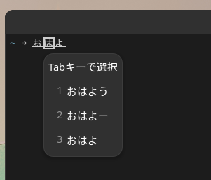

lacritty
lacritty
Alacritty Version 0.11.0 Release
Oct 13, 2022
Prebuilt binaries can be found in the
GitHub release.
Packaging
- Minimum Rust version has been bumped to 1.57.0
- Renamed
io.alacritty.Alacritty.appdata.xmltoorg.alacritty.Alacritty.appdata.xml - Renamed
io.alacrittytoorg.alacrittyforAlacritty.app
Added
- Track and report surface damage information to Wayland compositors
-
Escape sequence for undercurl, dotted and dashed underlines (
CSI 4 : [3-5] m)
ToggleMaximizedkey binding action to (un-)maximize the active window, not bound by default- Support for OpenGL ES 2.0
-
Escape sequence to set underline color (
CSI 58 : 2 : Ps : Ps : Ps m/CSI 58 : 5 : Ps m)
- Escape sequence to reset underline color (
CSI 59 m) - Vi mode keybinding (z) to center view around vi mode cursor
- Accept hexadecimal values starting with
0xfor--embed - Config option
cursor.blink_timeoutto timeout cursor blinking after inactivity -
Escape sequence to set hyperlinks (
OSC 8 ; params ; URI ST)
- Config
hints.enabled.hyperlinksfor hyperlink escape sequence hint highlight window.decorations_theme_variantto control both Wayland CSD and GTK theme variant on X11-
Support for inline input method

Changed
- No longer renders to macos and x11 windows that are fully occluded / not directly visible
- The
--helpoutput was reworked with a new colorful syntax - OSC 52 is now disabled on unfocused windows
SpawnNewInstanceno longer inherits initial--command- Blinking cursor will timeout after
5seconds by default - Deprecated
colors.search.bar, usecolors.footer_barinstead - On macOS, Alacritty now reads
AppleFontSmoothingfrom user defaults to control font smoothing - Warn when either
columnsorlinesis non-zero, but not both -
Client side decorations should have proper text rendering now on Wayland
- Config option
window.gtk_theme_variant, you should usewindow.decorations_theme_variantinstead --classnow sets both class part of WM_CLASS property and instance--class'sgeneralandinstanceoptions were swapped- Search bar is now respecting cursor thickness
- On X11 the IME popup window is stuck at the bottom of the window due to Xlib limitations
- IME no longer works in Vi mode when moving around
Fixed
- Creating the IPC socket failing if
WAYLAND_DISPLAYcontains an absolute path - Crash when resetting the terminal while in vi mode
font.glyph_offsetnot live reloading- Failure when running on 10-bit color system
- The colors being slightly different when using srgb displays on macOS
- Vi cursor blinking not reset when navigating in search
- Scrolling and middle-clicking modifying the primary selection
- Bottom gap for certain builtin box drawing characters
- Incorrect built-in glyphs for
U+2567andU+2568 - Character mappings in the DEC special graphics character set (line drawing)
- Window flickering on resize on Wayland
- Unnecessary config reload when using
/dev/nullas a config file - Windows
Open Alacritty Hereon root of drive displaying error - On macOS,
font.use_thin_strokesdid not work since Big Sur - On macOS, trying to load a disabled font would crash
- On macOS, Alacritty sessions did not appear in the list of tty sessions for
wandwho - Cursor not hiding on GNOME Wayland
- Font having different scale factor after monitor powering off/on on X11
- Viewport not updating after opening a new tabbed window on macOS
- Terminal not exiting sometimes after closing all windows on macOS
- CPU usage spikes due to mouse movements for unfocused windows on X11/Windows
- First window on macOS not tabbed with system prefer tabs setting
- Window being treaten as focused by default on Wayland
Removed
font.use_thin_strokesconfig field; to use thin strokes on macOS, set
AppleFontSmoothing to 0 with $ defaults write -g AppleFontSmoothing -int 0